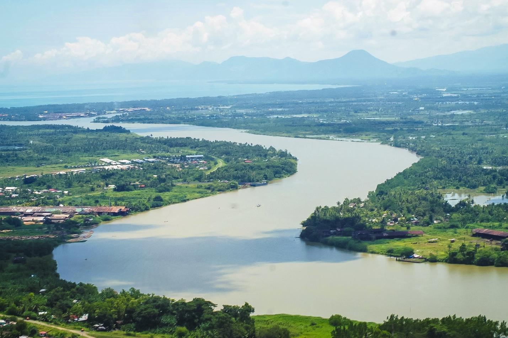
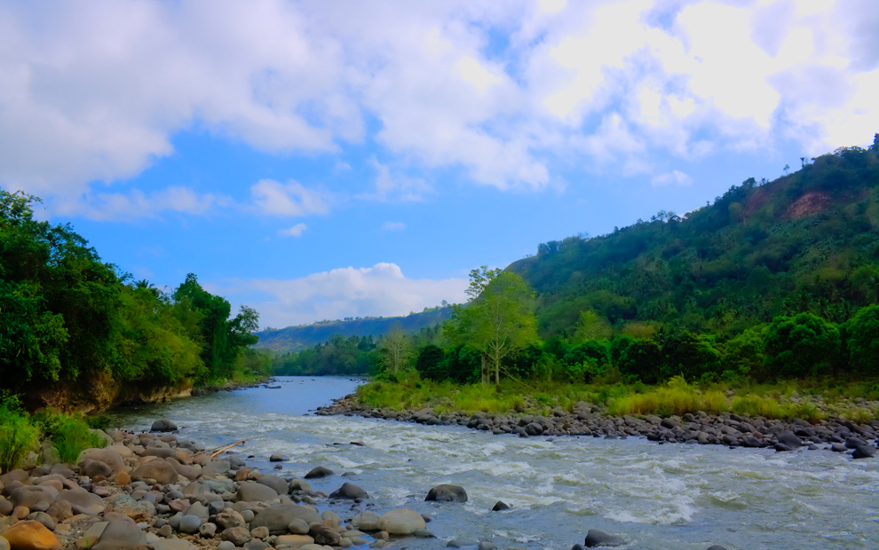
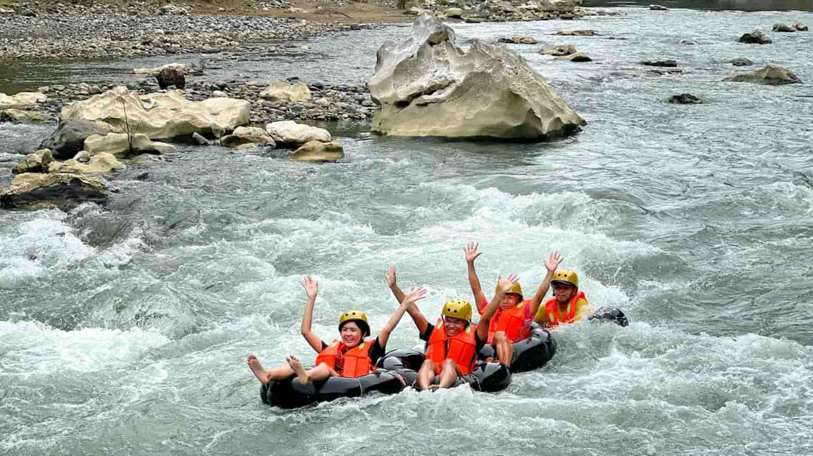

|  | Agusan river Agusan River winds gracefully through a breathtaking landscape, offering a peaceful haven for kayaking, fishing, or riverside relaxation. Surrounded by vibrant flora and home to local wildlife, it’s a serene destination perfect for slow, scenic days or quiet exploration. Whether you're paddling through gentle currents or enjoying a picnic on its banks, the Agustina River invites you to unwind and connect with nature. |
Trips 6:00 10:00 2:00 |
|  | Cagayan river Cagayan River, the longest and mightiest river in the Philippines, is a stunning blend of natural beauty and cultural heritage. Flowing through valleys and vibrant landscapes, it’s a prime spot for river cruises, kayaking, and discovering the heart of Northern Luzon. With historic towns along its banks and scenic views at every turn, the Cagayan River offers a rich and unforgettable experience for travelers seeking both adventure and history. |
Trips 7:00 9:30 12:00 2:30 |
|  | Tinipak Rizal river Tinipak River, tucked away in the rugged beauty of Rizal, is a natural wonder known for its striking white marble boulders and crystal-clear waters. Perfect for adventure seekers and nature lovers, this river offers scenic trails, cliffside views, and refreshing dips in cool mountain streams. Whether you're hiking through lush forests or lounging by its unique rock formations, Tinipak River delivers an unforgettable escape just a few hours from the city. |
Trips 9:00 12:00 3:00 |